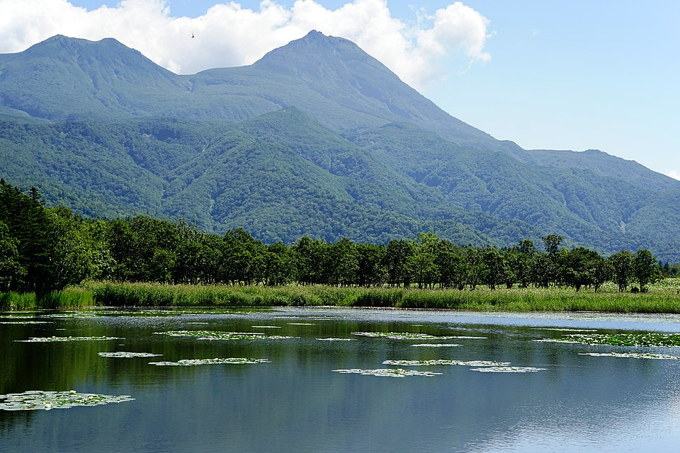
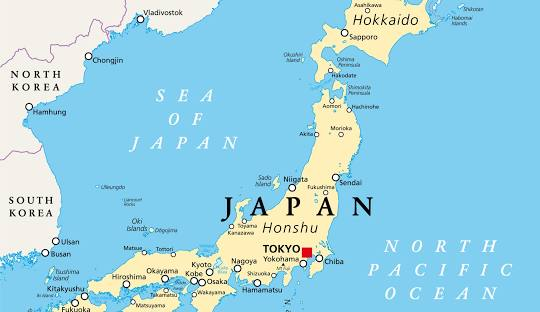
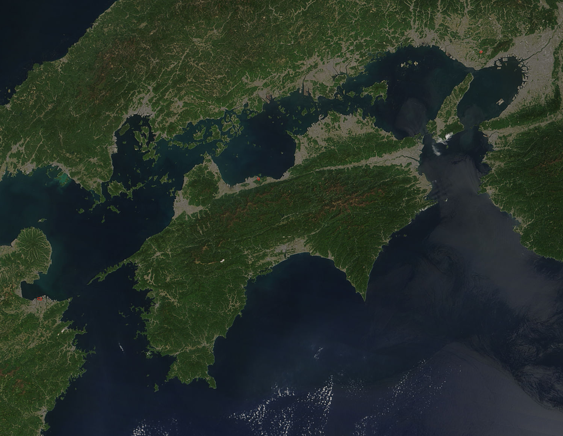

Hokkaido
Hokkaido (jap. 北海道 Hokkaidō; ajn. Mosir, dawniej Ezo lub Yezo) – największa pod względem powierzchni jednostka podziału administracyjnego Japonii, w skład której wchodzi druga pod względem wielkości wyspa tego państwa. Od Honsiu oddziela ją cieśnina Tsugaru, ale obie wyspy są połączone podwodnym tunelem Seikan. Największym miastem i zarazem stolicą tego dystryktu (regionu administracyjnego i jednocześnie geograficznego) jest Sapporo.

Honshu
Honsiu (jap. 本州 Honshū) – największa, a tym samym główna wyspa Japonii, znajduje się na niej stolica państwa, Tokio[2]. Na północy cieśnina Tsugaru oddziela ją od Hokkaido, na południu Morze Wewnętrzne od Sikoku, a na południowym zachodzie po drugiej stronie cieśniny Shimonoseki leży wyspa Kiusiu. Honsiu jest siódmą co do wielkości wyspą na świecie.

Shikoku
Sikoku (jap. 四国 Shikoku; tłum. „cztery prowincje”) – najmniejsza i najsłabiej zaludniona z czterech głównych wysp Japonii[2], położona w południowo-zachodniej części Wysp Japońskich, między Morzem Wewnętrznym a Oceanem Spokojnym.